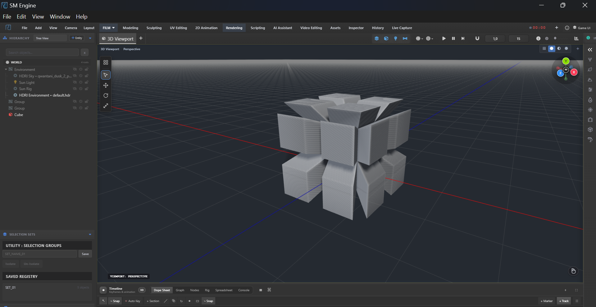
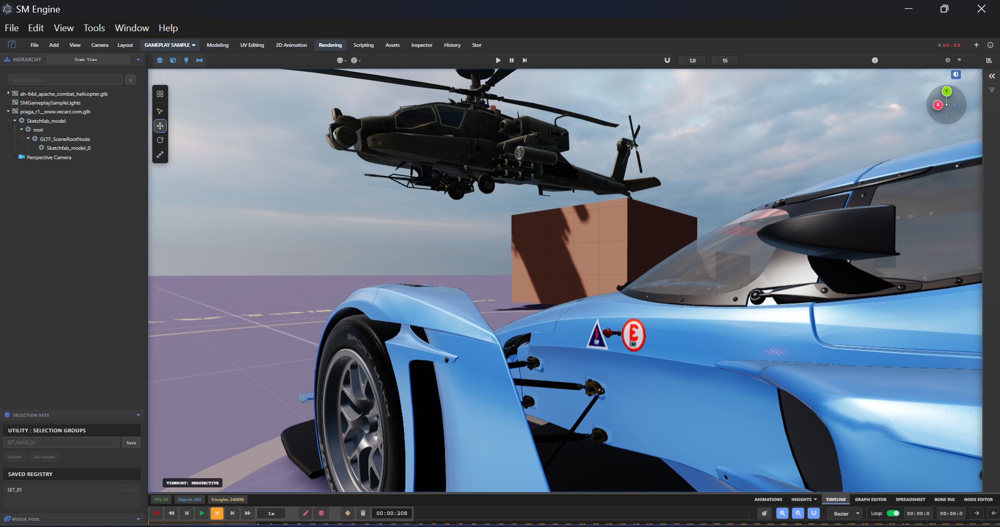
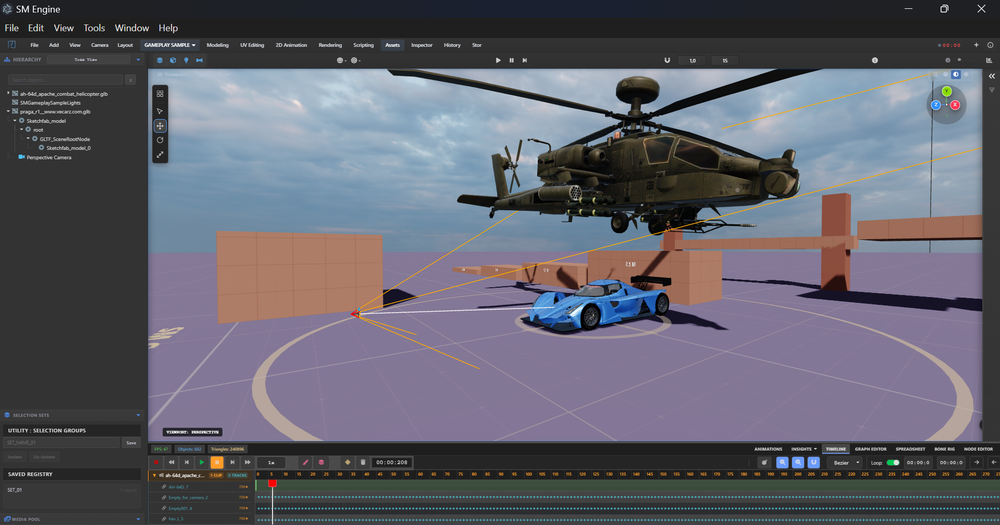
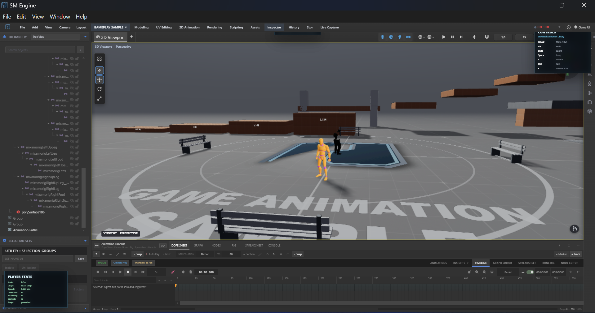
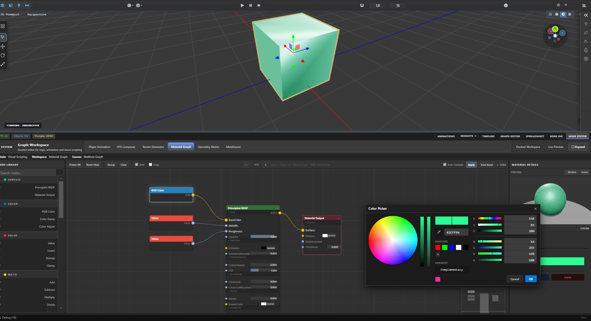
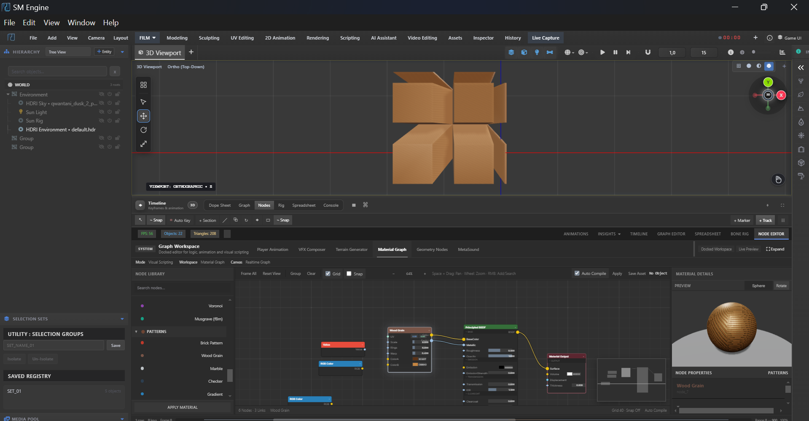

Milestones in motion.
Six focused gears for the six kinds of decisions a project asks for. Same scene, different cockpit.
Shape01 / modeling
- topology
- Vertex, edge, polygon, loop workflows
- modifiers
- Mirror · bevel · subdivision
- sculpt
- Clay, smooth, pinch, crease falloffs
Start where the idea has an edge. Move from a rough silhouette to a form you can actually judge — while the object stays in view.





Make cause and effect visible. Lay out a relationship, change one input and read the result — materials, logic and runtime rules as inspectable graphs.
Connect02 / node systems
- materials
- PBR graphs, procedural textures
- logic
- Events, math, triggers, variables
- feedback
- Live evaluation in the scene


Environment03 / worlds
- ocean
- Multi-frequency waves, foam
- terrain
- Heightfield sculpting
- sky
- Sun path, atmosphere, haze
Give the frame a sense of place. Water makes scale legible; light defines the reading. Space, weather and movement before anyone presses play.


Direct the moment, then carry it to the finish. Block a beat on the timeline, adjust the pause, mix the sound — picture and timing reviewed together before the handoff.
Direct & finish04–05 / motion · media
- timeline
- Multi-track keys, F-curves, IK rigs
- picture
- Sequencer, transitions, overlays
- sound
- Multi-channel mixer, EQ, routing